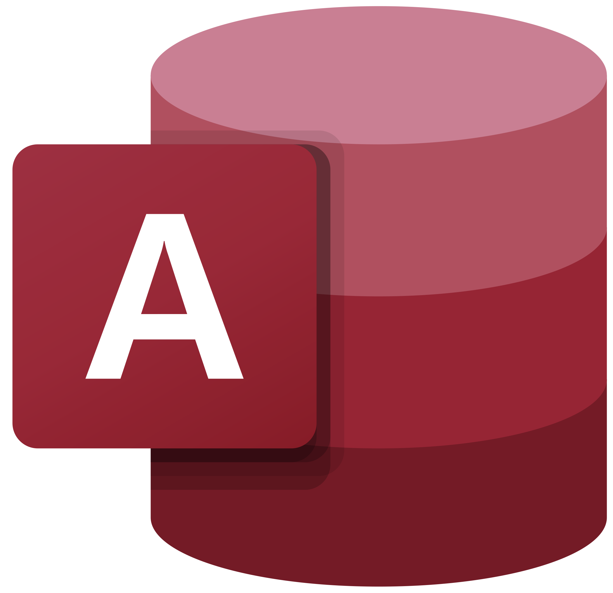
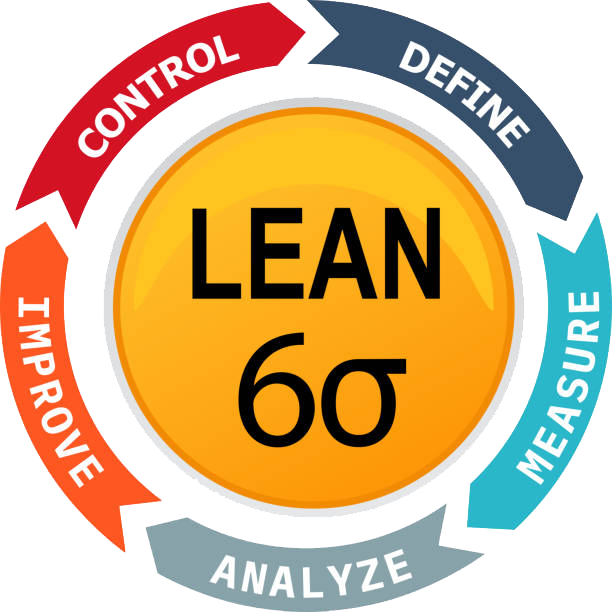

Learning Tracks
Courses & Tracks
Power BI Data Analysis
Business Intelligence & PL-300
EN
Track Curriculum & Modules
Microsoft Certified: Power BI Data Analyst (PL-300):
- Part 1: Data ETL & Preparation with Power Query
- Part 2: Data Modeling & Advanced DAX Calculations
- Part 3: Visualizations & Executive Dashboard Design
Specialized & Fast-Track Series:
- Power BI Crash Course: Accelerated learning for quick onboarding
- Power BI for Executives: High-level business metrics & KPIs
- Introductory Presentation: Simplified BI capabilities walkthrough
AR
محتويات ومسارات التراك
المسار الاحترافي لشهادة مايكروسوفت (PL-300):
- الجزء الأول: تجهيز وتنظيف وسحب البيانات باستخدام Power Query
- الجزء الثاني: نمذجة البيانات، بناء العلاقات، ومعادلات DAX
- الجزء الثالث: تصميم التقارير ولوحات التحكم التفاعلية (Dashboards)
المسارات السريعة والمتخصصة:
- كورس سريع (Crash Course): تطبيق عملي مركز في وقت قياسي
- Power BI للمديرين: استيعاب المؤشرات واتخاذ القرارات الذكية
- جلسة تعريفية شاملة: شرح ميسر لماهية وإمكانيات ذكاء الأعمال
Mastering Data Analysis with Excel
Interactive Dashboards & DAX
EN
Business Intelligence in Excel
Core Masterclass: Data Analysis & Dashboards:
- Pivot Tables & Pivot Charts: Dynamic data summarization
- Interactive Business Dashboards: Slicers, timelines, and layout
- Data Model & Power Pivot: Working with relational data in Excel
- DAX Language in Excel: Writing measures on real business cases
Recommended Prerequisites (If needed):
- Excel for Beginners & Intermediate series to solidify foundation
AR
تحليل البيانات ولوحات القيادة بالإكسيل
الكورس الأساسي: تحليل البيانات وبناء الـ Dashboards:
- Pivot Tables & Charts: تلخيص وتصنيف البيانات بدقة
- تصميم لوحات تفاعلية: ربط التقارير بمجزءات البيانات (Slicers)
- نموذج البيانات (Data Model): ربط عدة جداول داخل الإكسيل
- لغة DAX: كتابة المقاييس المتقدمة مع تمارين ومشاريع عملية
المتطلبات السابقة المقترحة:
- دورة المبتدئين والمتوسطين لمن يريد تثبيت أساسيات الإكسيل أولاً
Excel: From Scratch to Advanced
Foundations, Formulas & Skills
EN
Comprehensive Excel Roadmap
The Ideal Starting Point:
Perfect launchpad for accounting, engineering, analysis, or workplace productivity.
- Excel for Absolute Beginners: Grid navigation, cells, formatting & core logic
- Excel Intermediate Training: Logical functions, lookups (VLOOKUP, XLOOKUP), and data validation
- Advanced Topics & Automation: Complex formulas, nested logic, and workplace techniques
AR
المسار المتكامل للإكسيل من الصفر حتى الاحتراف
البوابة المثالية لجميع المجالات:
أنسب انطلاقة للمحاسبين، المهندسين، ومحللي البيانات، وأي شخص يستخدم الإكسيل في بيئة العمل.
- كورس المبتدئين (من الصفر): واجهة البرنامج، المعادلات البسيطة، وتنسيق الجداول
- المستوى المتوسط: دوال البحث والربط (XLOOKUP / VLOOKUP) والدوال الشرطية
- المستوى المتقدم: تركيب الدوال المعقدة، أدوات التحقق وحل مشكلات العمل اليومية
Thinking in CANDY
Project Estimation & Cost Control
EN
Construction Engineering Suite
Complete Project Management Tracks:
- Construction Estimating Basics: Setting up pricing masterfiles & bills
- Advanced Estimating Topics: Complex resource allocation & indirect costs
- Valuation & Cost Control: Progress billing, subcontracts & variance tracking
- Planning & QTO: Quantity takeoff integration & scheduling links
Micro-Learning & Skills:
- Building Skills Series: Focused bite-sized videos mastering specific tools
AR
إدارة المشروعات والتسعير الهندسي ببرنامج كاندي
المسارات المتكاملة لإدارة المشاريع الإنشائية:
- Construction Estimating Basics: أساسيات تسعير مقايسات المشاريع
- Advanced Estimating: الموضوعات المتقدمة في تحليل التكاليف والموارد
- Valuation & Cost Control: المستخلصات الشهرية ومراقبة تكاليف المشروعات
- Planning & QTO: حصر الكميات وربطه بالبرامج الزمنية
المقاطع المهارية المركزة:
- سلسلة مهارات سريعة (Building Skills): مقاطع محددة تضيف لك مهارات مباشرة

Microsoft Access Database Systems
Relational Design & Work Applications
EN
Database Architecture & Engineering
Database Fundamentals & Modeling:
- Relational Design Concepts: ERD diagrams & schema planning on paper
- Access Core Objects: Structuring tables, relationships & constraints
- Interactive Queries & Forms: Criteria, joins & user-friendly interfaces
- Executive Reports: Grouping, summarizing & printable documentation
Automation & Logic:
- Macros & Introductory Code: Automating workflow actions & buttons
AR
تصميم وتطوير قواعد البيانات الاحترافية بـ Access
تأسيس قواعد البيانات والتطبيق العملي:
- تأسيس وتخطيط: مبادئ قواعد البيانات وتصميم المخطط (ERD) على الورق
- عناصر الأكسيس الأساسية: بناء الجداول، المفاتيح، والعلاقات السليمة
- الاستعلامات والنماذج (Forms & Queries): إدخال وتصفية البيانات باحتراف
- التقارير (Reports): إعداد وطباعة مخرجات وبيانات النظام
الأتمتة والبرمجة:
- الماكرو وبدايات كتابة الكود: ربط الأزرار وجعل النظام تفاعلياً ومترابطاً

Lean Six Sigma & Quality Excellence
Process Improvement & RCA
EN
Quality & Process Improvement
Foundations & DMAIC Principles:
- Introduction to Six Sigma: Core concepts, DMAIC phases & defect prevention
Root Cause Analysis Tools:
- Fishbone (Ishikawa) Diagram: Structured troubleshooting of process bottlenecks
AR
إدارة الجودة والتحسين المستمر
مفاهيم ومنهجيات الجودة:
- مقدمة في الستة سيجما: فهم منهجية DMAIC لتقليل العيوب وتطوير العمليات
أدوات تحليل الأسباب الجذرية:
- مخطط هيكل السمكة (Fishbone): التحليل الدقيق لجذور المشكلات وحلها عملياً
Executive Business Communication
The Art of Professional Emailing
EN
High-Impact Correspondence
The Art of Writing Professional Emails:
- Business Email Etiquette: Clarity, structure, and professional tone
- Executive Framing: Addressing leadership, managers, and clients
- Handling Delicate Scenarios: Polite escalations, follow-ups & crisp CTAs
AR
التواصل والمراسلات التنفيذية
فن كتابة الإيميلات الاحترافية:
- إتيكيت الإيميل المهني: صياغة رسائل موجزة وواضحة تضمن الاستجابة السريعة
- مخاطبة الإدارة والعملاء: الأسلوب الاحترافي في عرض التقارير والملاحظات
- إدارة المواقف الصعبة: المتابعة الدبلوماسية وصياغة طلبات الإجراءات بذكاء
Workflow Automation with Power Automate
Complex Flow Architectures
EN
Workflow Engineering & Integration
Advanced Multi-Step Architectures:
- Complex Project Automation: Designing multi-condition approval flows
- Ecosystem Integration: Connecting Forms, Emails, Excel & SharePoint
- Error Handling & Resilience: Stable execution for critical operations
AR
أتمتة وهندسة مسارات العمل
تطبيق متكامل لمشاريع معقدة:
- بناء مشروع عملي مركب: دورات موافقة وتدفق للبيانات متعددة الشروط والمهام
- تكامل المنظومة: ربط تلقائي بين الإكسيل، الإيميلات، والنماذج السحابية
- استقرار النظام: معالجة الأخطاء وضمان سير التدفق دون توقف